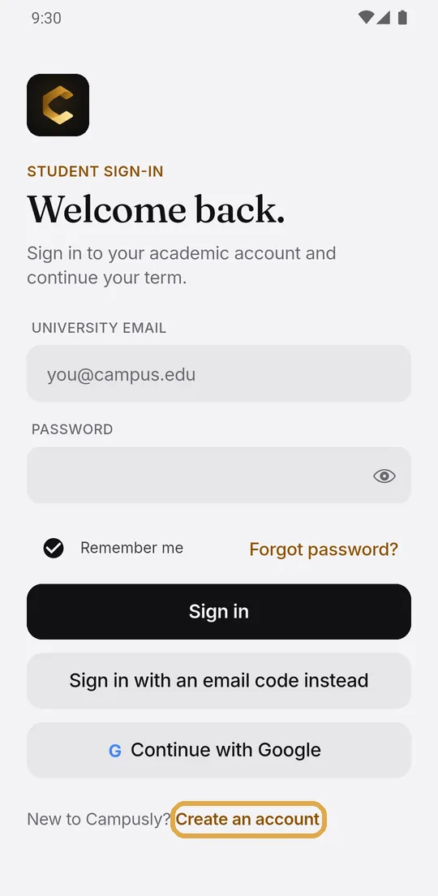
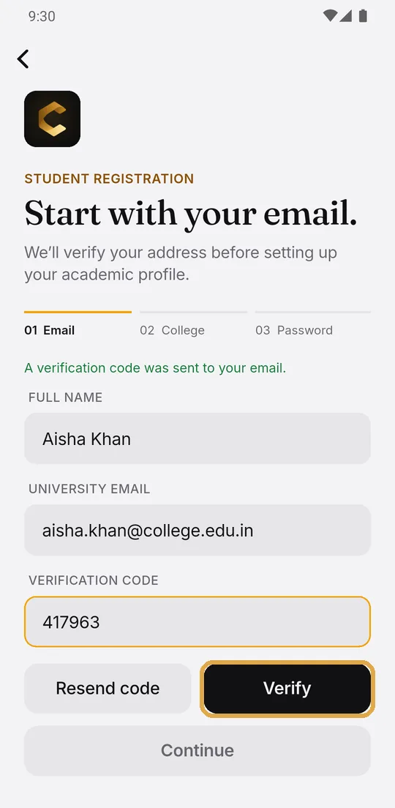
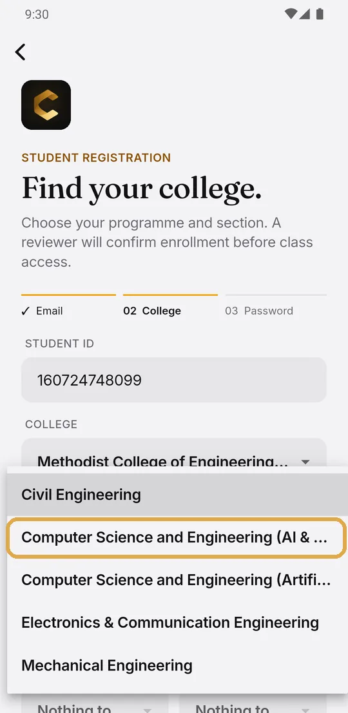
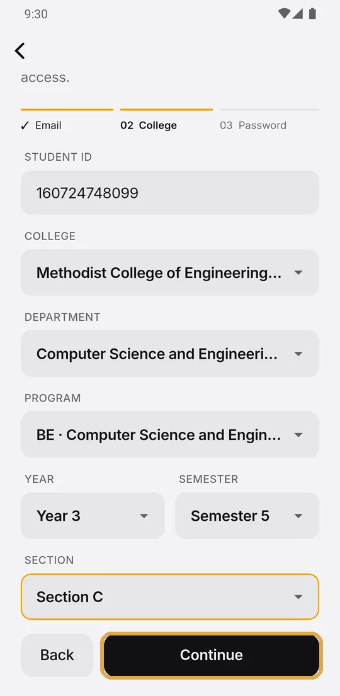
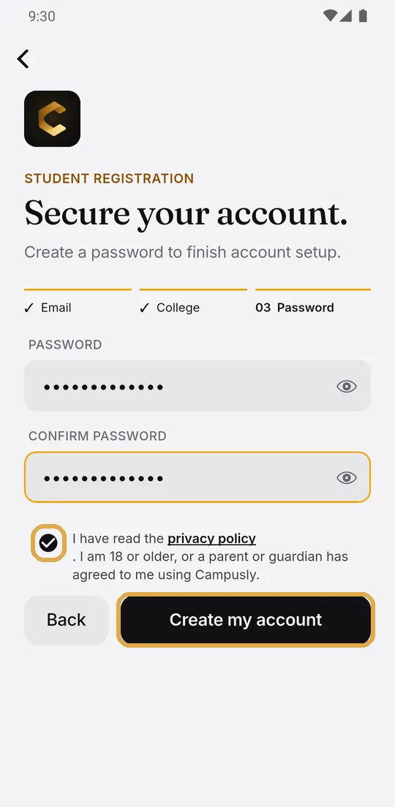
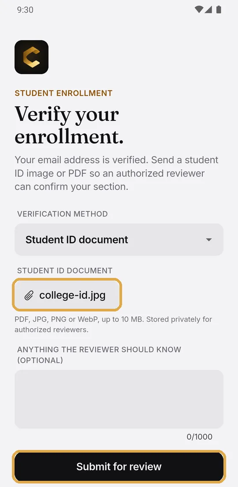
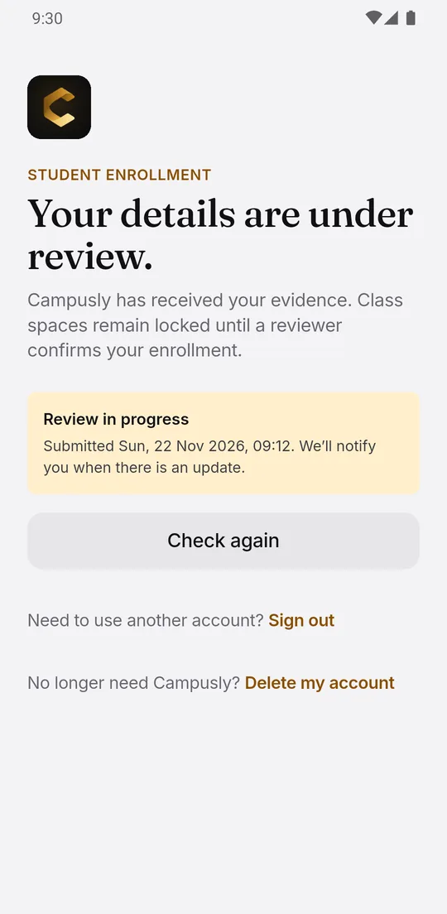
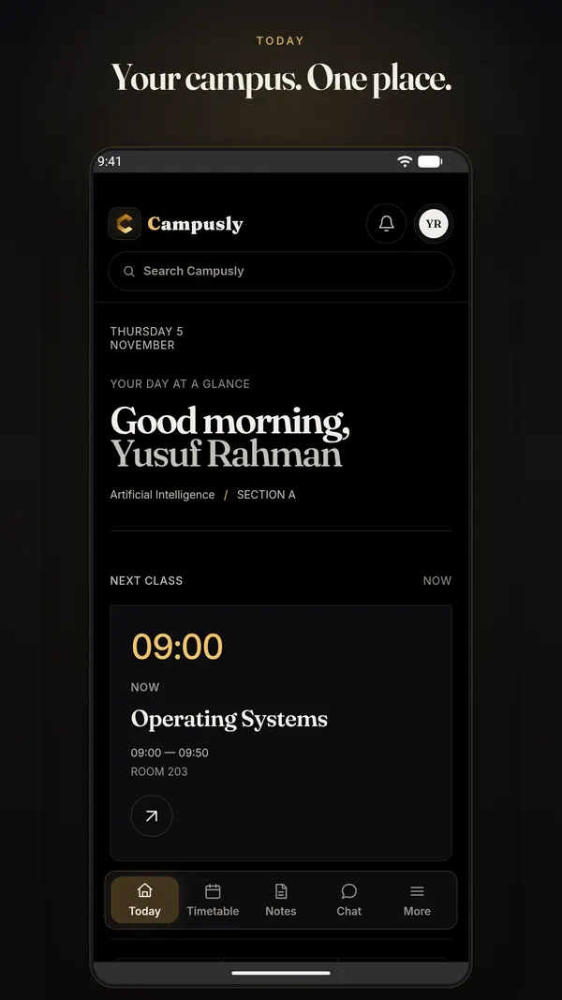

Student guide
Install Campusly in five steps.
It takes about five minutes. Do every step on your phone.
Before you start, keep ready
- Your college Google account (your college email and its password).
- Your college ID card, or a clear photo of it.
- An Android phone with Android 7.0 or later.
Installed Campusly from this website before? Uninstall that copy first. The Google Play version cannot install over it.
Got the Campusly test link from your class group?
Do step 1 first. Then look at how your link starts:
- play.google.com/apps/testing/… is the join link: tap it and carry on from step 2.
- play.google.com/store/apps/details?id=work.campusly.app is the install link: it works only after you join. Do step 2 first, then tap your link for step 3.
Opened it inside WhatsApp? Use Open in Chrome as step 2 shows.
Step 1
Use your college account in the Play Store
- Open the Play Store app.
- Tap your profile picture at the top right.
- Tap the small arrow next to the name and choose your college email.
- Not in the list? Tap Add another account and sign in with your college email and password.
The Play Store must be on your college account for steps 2 and 3. Only college accounts are on the testers list.
Step 2
Join the Campusly test
- Tap the button above, or the test link you got from your class group. It opens a Google Play page.
- Opened inside WhatsApp or another app? Tap ⋮ at the top right and choose Open in Chrome. Chrome knows your Google accounts; the in-app browser does not.
- If it asks you to sign in, use your college email. If you see another account, tap its picture and switch.
- Tap Become a tester and wait until it says You are now a tester.
- Tap download it on Google Play on that page, or go to step 3.
“App not available for this account” or no button? You are signed in with the wrong account, or your email is not on the list yet. Switch to your college account and try again.
Step 3
Install from Google Play
- Tap the button above. It opens Campusly in the Play Store.
- Tap Install and wait for it to finish.
- Tap Open.
Says “Item not found”? Google Play can take a few minutes after you join. Close the Play Store, wait five minutes and tap the button again.
Step 4
Create your Campusly account
Use your college email here too. The pictures show a sample student.
-
On the first screen, tap Create an account at the bottom.

-
Type your full name and college email. Tap Send verification code, type the 6-digit code from your email, then tap Verify and Continue.

-
Type your roll number as Student ID. Choose your college, then your department from the list.

-
Choose your program, year, semester and section. Check them twice: you see your section's timetable and chat. Tap Continue.

-
Make a password of at least 8 characters and type it twice. Tick the privacy box and tap Create my account. You are signed in and go straight to step 5.

No code? Look in your college email's spam or promotions folder, then tap Resend code.
Step 5
Upload your college ID
This screen opens by itself after step 4. If you closed the app, open it and sign in with your college email and password.
-
Tap Choose file and pick a clear photo or PDF of your college ID. Your name and roll number must be readable. Tap Submit for review.

-
You will see Your details are under review. That's it. We check every ID by hand, so approval can take up to a day.

Your ID is stored privately, seen only by the Campusly reviewers, and deleted automatically after 90 days.
After approval
Open Campusly again, or tap Check again. Your Today screen shows your section's classes, and Timetable, Notes, Assignments and Chat open for you.
Picked the wrong section? After approval, sign in at www.campusly.work/placement-correction and ask for a correction.
